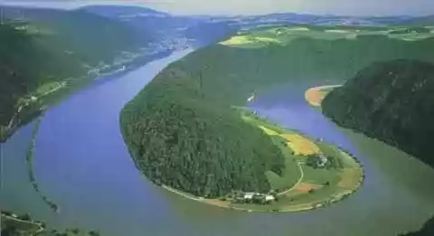

SRBIJA
Dunav je najznačajnija evropska reka i predstavlja evropski saobraćajni koridor 7. Sastavni je deo transevropskog plovidbenog sistema Rajna – Majna –
Dunav, koji svojom dužinom od 3505 km plovnog puta spaja Atlantik i Mediteran, povezuje zapad i istok Evrope.

Dunav je i kroz istoriju uvek bio važan međunarodni plovni put. Dugo vremena bio je severoistočna granica rimske imperije. Danas teče kroz ili čini
granicu deset zemalja: Nemačka, Austrija, Slovačka, Mađarska, Hrvatska, Srbija, Rumunija, Bugarska, Moldavija i Ukrajina. Dunav nastaje od reke Brege
i Brigaha koje izviru na planini Švarcvald u Nemačkoj i uliva se u Crno more na prostoru Rumunije. Tokom dugim 2783 km predstavlja drugu po veličini
evropsku reku (posle Volge duge 3692 km), a 27. je reka po veličini na svetu, a 32. po svom rečnom slivu. Na ušću u Crno more Dunav stvara deltu
površine 5500 km2, sa tri veća rukavca.
Na svom toku kroz Srbiju, dugom 588 km, Dunav se proteže od tromeđe Srbije, Mađarske i Hrvatske do ušća Timoka, na tromeđi Srbije, Bugarske i Rumunije.
Prolazi kroz živopisnu vojvođansku ravnicu i nacionalne parkove „Fruška gora“ i „Đerdap“. Pored prirodnog blaga, brojne su kulturno-istorijske
vrednosti koje se nižu duž njegovih obala. Glavne pritoke u Srbiji su mu reke Tisa, Sava, Tamiš, Morava, Nera i Timok.
Dunav je najpopularnija reka na svetu za rečna krstarenja, te predstavlja veliki turistički potencijal Srbije, sa dva najveća gradska centra u Srbiji
na svojoj obali – Beograd i Novi Sad.
Kanal Dunav – Tisa – Dunav je jedinstveni sistem kanala protiv poplava, za navodnjavanje zemljišta, kao plovni put, za turizam, lov i ribolov. Sistem
kanala se proteže na oko 12.700 km², između reka Dunav i Tisa, u Bačkoj i Banatu, na teritorije Vojvodine. Ukupna dužina kanala je 929 km, a moguća
plovidba kanalom je 664 km. U sistemu kanala nalazi se 14 luka za utovar-istovar tereta.